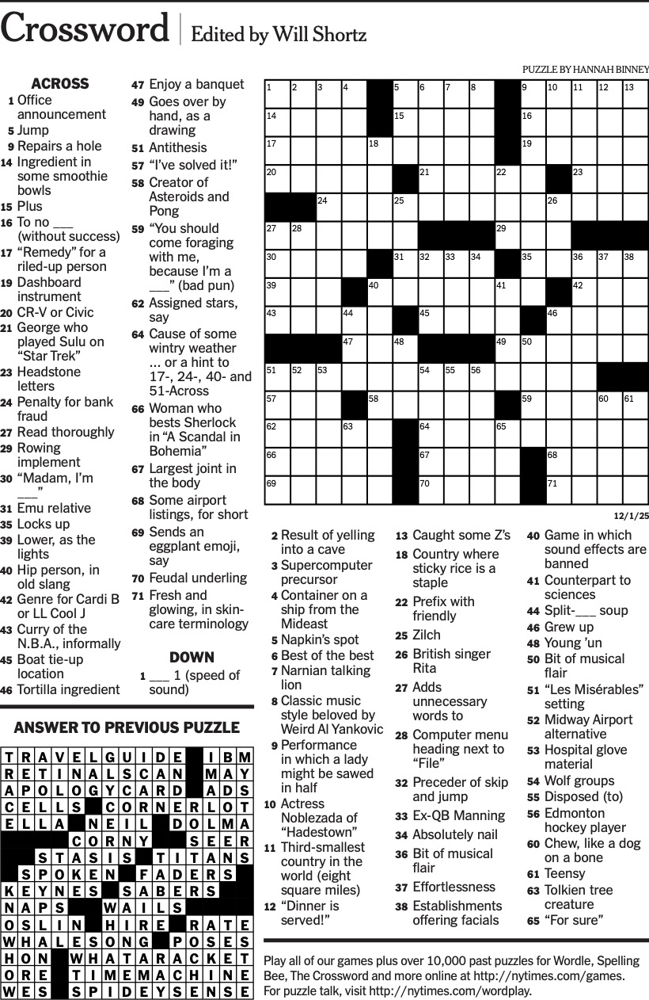
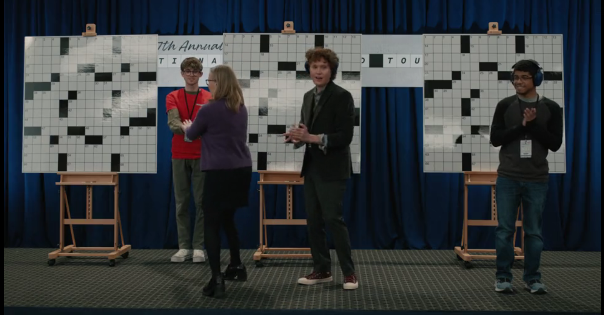
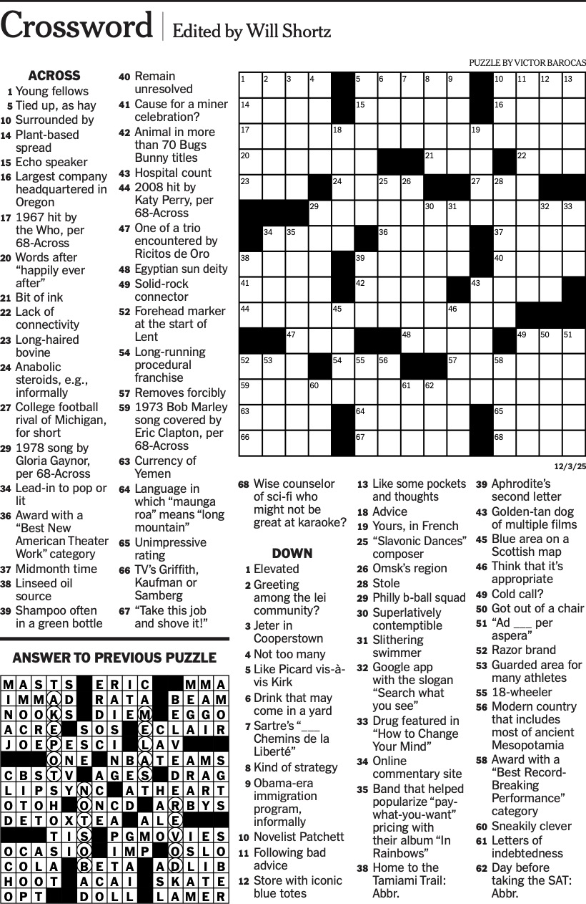

Real grids from real sources
Elsbeth, "Murder Six Across"
Crossword by Hannah Binney, New York Times, Dec. 1, 2025
See this puzzle at The Cross(word) Reference →
See this puzzle at The Cross(word) Reference →


Crossword by Victor Barocas, New York Times, Dec. 3, 2025
See this puzzle at The Cross(word) Reference →
See this puzzle at The Cross(word) Reference →

